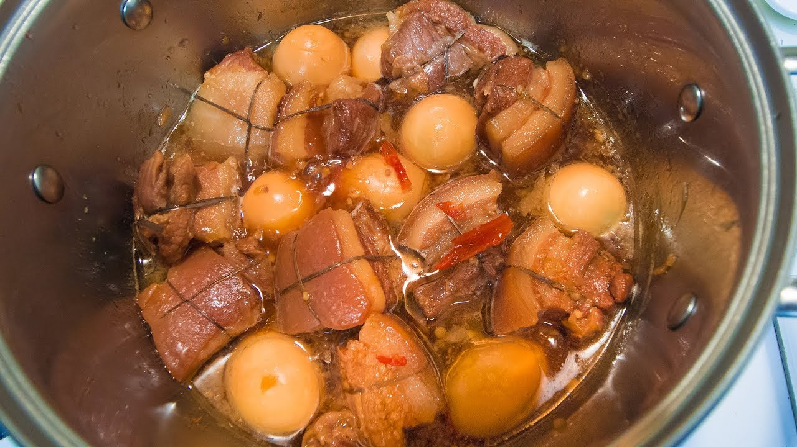

Thit Kho Trung

Pork and eggs all in one pot, boiled to sweet and salty perfection.
I actually don't remember how to make this.
I literally called my grandma to ask her the other month.
Ingredients
- Pork shoulder
- Boiled eggs
- Shallots
- Garlic
- Sugar
- Coconut water
- Oil
Steps
- Something about cutting your pork up and letting it dry for 15 minutes.
- Mince shallots and garlic. Use half of this to mix into the raw pork.
- I think you gotta put the stove on medium-low.
- Add oil to a pot. Add garlic and shallots and cook until aromatic.
- Add in sugar and mix with garlic and shallots.
- Once golden or browned, add in coconut water.
- Let it boil and then add in pork.
- Once the pork is thoroughly cooked, add in your boiled eggs.
- Let that simmer for a while, removing any foam from the top of the liquid.
- Serve over white rice!